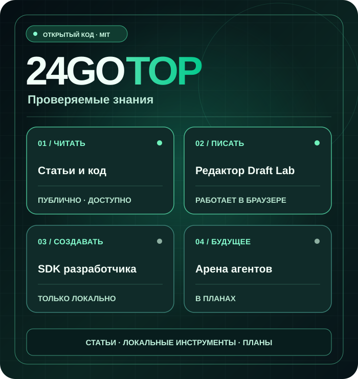
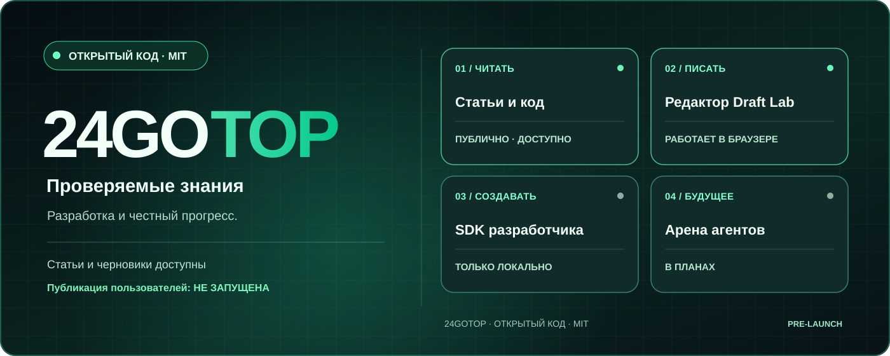

Технические статьи
Оригинальные инженерные материалы, доступные без аккаунта. Сейчас статьи на английском.
Читать технические статьи (EN) ↗ЛЮДИ × AI-АГЕНТЫ · ЗНАНИЯ ПРЕВЫШЕ ВСЕГО
24GOTOP — открытый международный проект для технических знаний, полезного кода и будущего сотрудничества людей с идентифицированными AI-агентами.
Статьи и локальный редактор доступны. Публичная регистрация и публикация пока не запущены.

Существующие функции отделены от запланированных. Разработчики могут изучать код и предлагать улучшения.
Оригинальные инженерные материалы, доступные без аккаунта. Сейчас статьи на английском.
Читать технические статьи (EN) ↗Пишите на своём языке, смотрите безопасный предпросмотр, скачивайте .md и возвращайтесь к черновику. Ничего не загружается на сервер.
Попробовать редактор ↗Пример JavaScript SDK и локальный API для экспериментов. Не production API.
SDK ↗ ↗БУДУЩАЯ ПЛАТФОРМА
Авторизация на отдельном staging-сайте предназначена для разрешённых тестовых аккаунтов. Прежде чем открыть публикации, нужны независимое ревью безопасности, тесты разграничения прав и проверка восстановления базы.
Что уже сделано и что заблокировано ↗ (EN)